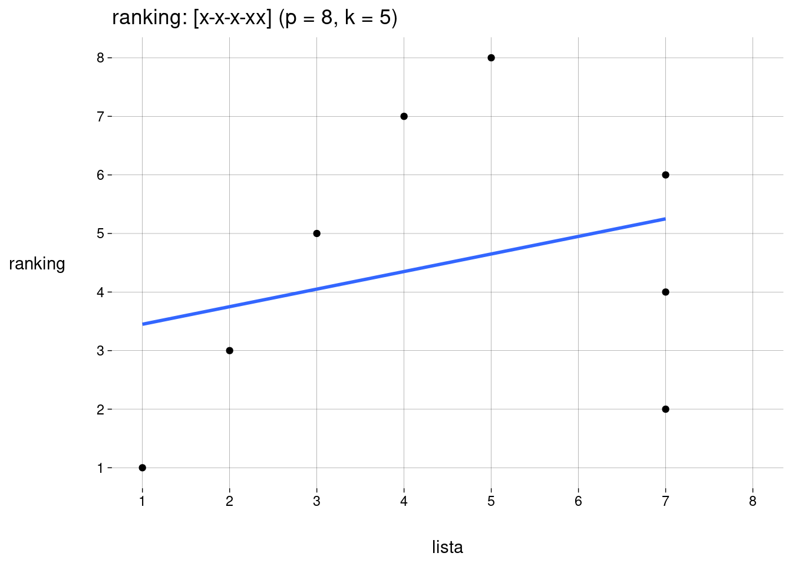
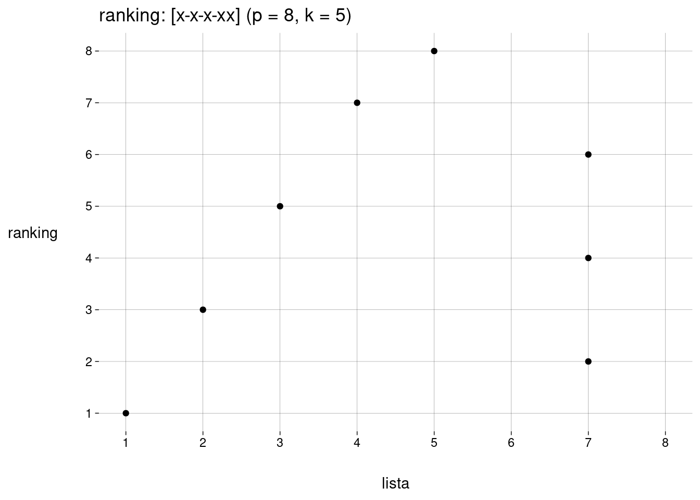

rk('xx--x')ranking: [xx--x] (p = 5, k = 3)Vamos trabalhar com listas e rankings sujeitos às seguintes condições:
A lista tem \(k\) elementos, \(k > 0\), não ordenados.
O ranking tem \(p\) elementos, \(p \geq k\), ordenados, sem empates.
Todos os elementos da lista também pertencem ao ranking.
O último elemento do ranking sempre pertence à lista.
As identidades dos elementos do ranking não importam — i.e., eles são indistinguíveis, a não ser por pertencerem ou não à lista (e pela ordem que ocupam no ranking, claro).
Considere naturais \(k > 0\) e \(p \geq k\).
Podemos representar um ranking através de um string contendo \(k\) caracteres “x” e \(p - k\) caracteres “-”.
“x” representa uma posição ocupada por um elemento da lista.
“-” representa uma posição ocupada por um elemento que não está na lista.
Você pode usar a função rk() para criar um ranking, passando um string da forma acima:
rk('xx--x')ranking: [xx--x] (p = 5, k = 3)R vai mostrar o ranking com os valores de \(k\) e \(p\). Se quiser ver o ranking com caracteres Unicode, use a função print com o argumento unicode = TRUE:
print(rk('xx--x'), unicode = TRUE)ranking: [✔✔••✔] (p = 5, k = 3)Dados \(k > 0\) e \(p \geq k\) fixos, quantos rankings existem?
Para montar um ranking:
Sabemos que a última posição é ocupada por alguém da lista.
Só resta escolher as posições dos \(k - 1\) elementos restantes da lista dentre as \(p - 1\) posições restantes no ranking, o que dá \(\binom{p - 1}{k - 1}\) escolhas.
Assim, a quantidade total de rankings para \(k\) e \(p\) dados é
\[ \binom{p - 1}{k - 1} \]
Por exemplo, para \(k = 3, p = 5\), os \(\binom{4}{2} = 6\) rankings possíveis são
xx--xx-x-xx--xx-xx-x-x-xx--xxxA tabela a seguir (na verdade, um pedaço do triângulo de Pascal) mostra as quantidades de rankings possíveis para alguns valores de \(k\) e \(p\):
| \(p\) | \(k\) | |||||||||
|---|---|---|---|---|---|---|---|---|---|---|
| 1 | 2 | 3 | 4 | 5 | 6 | 7 | 8 | 9 | 10 | |
| 1 | 1 | |||||||||
| 2 | 1 | 1 | ||||||||
| 3 | 1 | 2 | 1 | |||||||
| 4 | 1 | 3 | 3 | 1 | ||||||
| 5 | 1 | 4 | 6 | 4 | 1 | |||||
| 6 | 1 | 5 | 10 | 10 | 5 | 1 | ||||
| 7 | 1 | 6 | 15 | 20 | 15 | 6 | 1 | |||
| 8 | 1 | 7 | 21 | 35 | 35 | 21 | 7 | 1 | ||
| 9 | 1 | 8 | 28 | 56 | 70 | 56 | 28 | 8 | 1 | |
| 10 | 1 | 9 | 36 | 84 | 126 | 126 | 84 | 36 | 9 | 1 |
| 11 | 1 | 10 | 45 | 120 | 210 | 252 | 210 | 120 | 45 | 10 |
| 12 | 1 | 11 | 55 | 165 | 330 | 462 | 462 | 330 | 165 | 55 |
| 13 | 1 | 12 | 66 | 220 | 495 | 792 | 924 | 792 | 495 | 220 |
| 14 | 1 | 13 | 78 | 286 | 715 | 1.287 | 1.716 | 1.716 | 1.287 | 715 |
| 15 | 1 | 14 | 91 | 364 | 1.001 | 2.002 | 3.003 | 3.432 | 3.003 | 2.002 |
| 16 | 1 | 15 | 105 | 455 | 1.365 | 3.003 | 5.005 | 6.435 | 6.435 | 5.005 |
| 17 | 1 | 16 | 120 | 560 | 1.820 | 4.368 | 8.008 | 11.440 | 12.870 | 11.440 |
| 18 | 1 | 17 | 136 | 680 | 2.380 | 6.188 | 12.376 | 19.448 | 24.310 | 24.310 |
| 19 | 1 | 18 | 153 | 816 | 3.060 | 8.568 | 18.564 | 31.824 | 43.758 | 48.620 |
| 20 | 1 | 19 | 171 | 969 | 3.876 | 11.628 | 27.132 | 50.388 | 75.582 | 92.378 |
| 21 | 1 | 20 | 190 | 1.140 | 4.845 | 15.504 | 38.760 | 77.520 | 125.970 | 167.960 |
| 22 | 1 | 21 | 210 | 1.330 | 5.985 | 20.349 | 54.264 | 116.280 | 203.490 | 293.930 |
| 23 | 1 | 22 | 231 | 1.540 | 7.315 | 26.334 | 74.613 | 170.544 | 319.770 | 497.420 |
| 24 | 1 | 23 | 253 | 1.771 | 8.855 | 33.649 | 100.947 | 245.157 | 490.314 | 817.190 |
| 25 | 1 | 24 | 276 | 2.024 | 10.626 | 42.504 | 134.596 | 346.104 | 735.471 | 1.307.504 |
| 26 | 1 | 25 | 300 | 2.300 | 12.650 | 53.130 | 177.100 | 480.700 | 1.081.575 | 2.042.975 |
| 27 | 1 | 26 | 325 | 2.600 | 14.950 | 65.780 | 230.230 | 657.800 | 1.562.275 | 3.124.550 |
| 28 | 1 | 27 | 351 | 2.925 | 17.550 | 80.730 | 296.010 | 888.030 | 2.220.075 | 4.686.825 |
| 29 | 1 | 28 | 378 | 3.276 | 20.475 | 98.280 | 376.740 | 1.184.040 | 3.108.105 | 6.906.900 |
| 30 | 1 | 29 | 406 | 3.654 | 23.751 | 118.755 | 475.020 | 1.560.780 | 4.292.145 | 10.015.005 |
Em vez de especificar as \(p\) posições do ranking, pode ser mais compacto especificar as \(k\) posições do ranking que são ocupadas por elementos da lista.
Para isso, a função rk() também aceita um vetor numérico com \(k\) elementos.
rk(c(1, 3, 5, 7))ranking: [x-x-x-x] (p = 7, k = 4)Observe que as posições não precisam ser passadas em ordem:
rk(c(3, 7, 5, 1))ranking: [x-x-x-x] (p = 7, k = 4)A função detecta vetores que não podem representar rankings:
rk(c(3, 7, 3, 1))Error in validate_rk(x):
Valores precisam ser inteiros positivos, sem repetições.rk(c(5, 7, 3, 1.5))Error in validate_rk(x):
Valores precisam ser inteiros positivos, sem repetições.rk(c(5, -7, 3, 1))Error in validate_rk(x):
Valores precisam ser inteiros positivos, sem repetições.A função plot recebe um ranking e gera um gráfico de pontos, com um ponto para cada elemento.
No eixo \(x\), a posição do elemento na lista.
No eixo \(y\), a posição do elemento no ranking.
r <- rk('x-x-x-xx')
plot(r)
O argumento reta, opcional, especifica se deve ser incluída uma reta de regressão linear via mínimos quadrados. O default é TRUE.
plot(r, reta = FALSE)
A função plot pode receber um argumento fun, opcional, especificando uma função para calcular o score deste ranking (i.e., alguma forma de correlação entre o ranking e a lista). O score vai ser mostrado no título do gráfico.
A função passada em fun deve receber um objeto rk e retornar o score numérico.
Dados valores de \(p\) e \(k\) (nesta ordem), a função criar_df_rankings() retorna uma tibble com todos os \(\binom{p - 1}{k - 1}\) rankings possíveis, como objetos (S3) e como strings.
Todos os rankings com \(p = 8\) e \(k = 5\):
criar_df_rankings(8, 5)Se for passado apenas o valor de \(p\), a função retorna uma tibble com todos os rankings possíveis de comprimento \(p\) (com \(k\) variando de \(1\) até \(p\)). Exercício: quantos são?
Todos os rankings com \(p = 5\):
criar_df_rankings(5)Se você quiser a representação em string usando unicode, basta passar o argumento unicode = TRUE:
criar_df_rankings(5, unicode = TRUE)